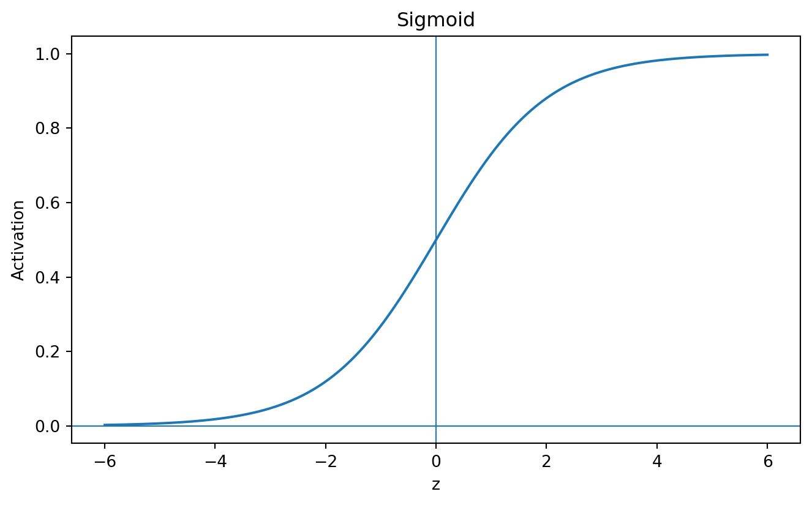
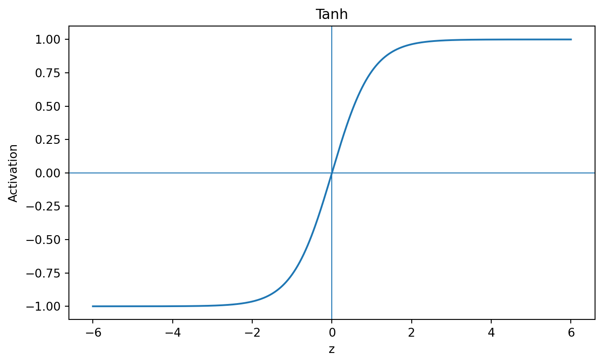
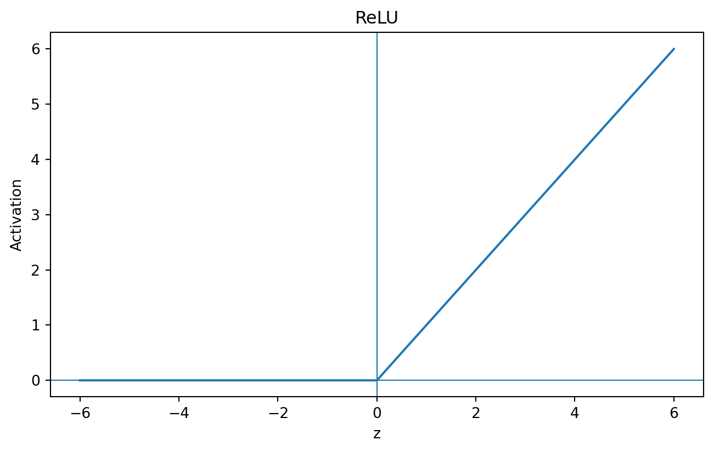
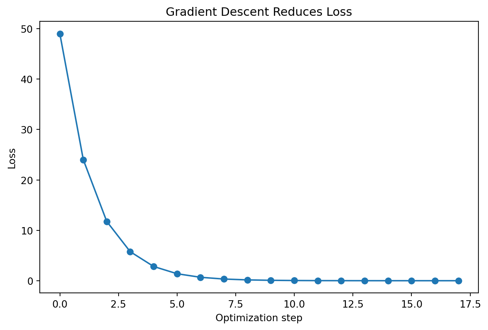
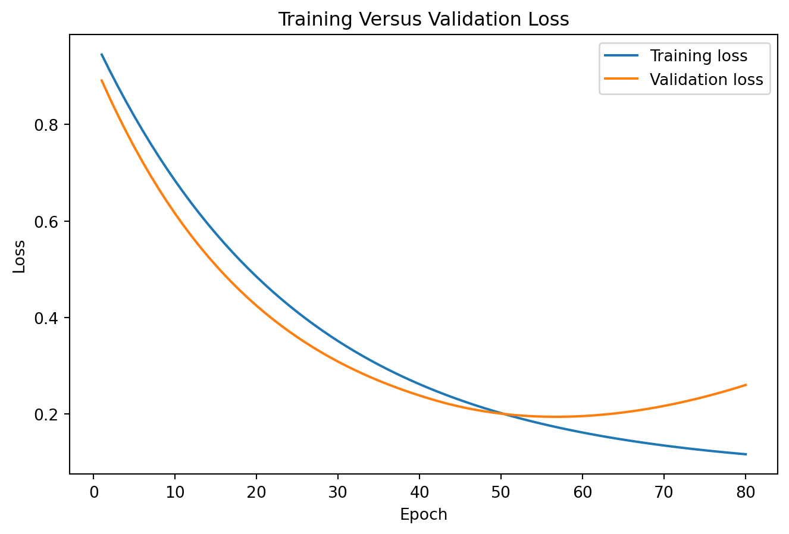
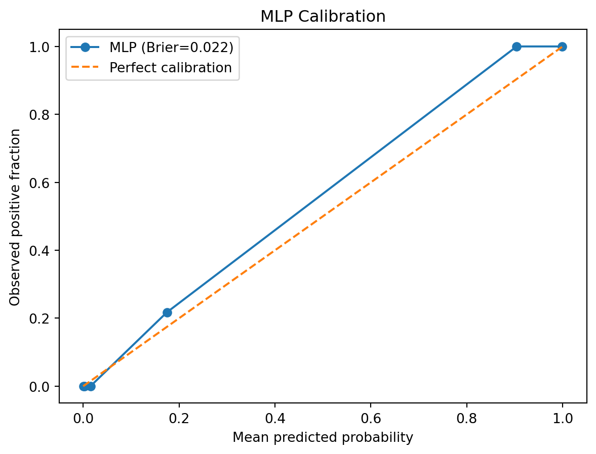

import numpy as np
x=np.array([0.8,-0.4,1.2])
w=np.array([0.5,-0.7,0.3])
b=0.1
z=w@x+b
znp.float64(1.1400000000000001)By the end of this chapter, you should be able to:
A linear model learns
\[ \hat y=w^\top x+b. \]
A neural network composes familiar operations:
\[ \boxed{\text{weighted sums}\rightarrow\text{nonlinear transformations}\rightarrow\text{loss}\rightarrow\text{optimization}}. \]
Hidden layers can construct new representations useful for prediction.
Chapter 12 showed that changing a representation can reveal, compress, or distort structure in data. Neural networks take the next step: rather than relying only on representations chosen in advance, they can learn intermediate representations jointly with the predictive task. This connection is central to understanding why deep learning became influential in vision, language, and other high-dimensional domains.
Logistic regression computes
\[ z=w^\top x+b \]
and
\[ \hat p=\sigma(z)=\frac{1}{1+e^{-z}}. \]
A neuron generalizes this pattern:
\[ z=\sum_{j=1}^{p}w_jx_j+b, \qquad a=\phi(z). \]
import numpy as np
x=np.array([0.8,-0.4,1.2])
w=np.array([0.5,-0.7,0.3])
b=0.1
z=w@x+b
znp.float64(1.1400000000000001)sigmoid=lambda z: 1/(1+np.exp(-z))
sigmoid(z)np.float64(0.7576796390037049)Without nonlinear activation,
\[ h=W_1x+b_1 \]
and
\[ y=W_2h+b_2 \]
collapse to
\[ y=(W_2W_1)x+(W_2b_1+b_2), \]
which is still linear.
Depth without nonlinearity collapses back into linearity.
\[ \sigma(z)=\frac{1}{1+e^{-z}}, \qquad \sigma'(z)=\sigma(z)(1-\sigma(z)). \]
\[ \tanh(z)=\frac{e^z-e^{-z}}{e^z+e^{-z}}. \]
\[ ReLU(z)=\max(0,z). \]
For multiclass logits,
\[ P(Y=k\mid x)=\frac{e^{z_k}}{\sum_{j=1}^{K}e^{z_j}}. \]
import matplotlib.pyplot as plt
z_grid=np.linspace(-6,6,500)
functions={
"Sigmoid":1/(1+np.exp(-z_grid)),
"Tanh":np.tanh(z_grid),
"ReLU":np.maximum(0,z_grid)
}
for name,values in functions.items():
plt.figure(figsize=(8,4.5))
plt.plot(z_grid,values)
plt.axhline(0,linewidth=.8)
plt.axvline(0,linewidth=.8)
plt.xlabel("z")
plt.ylabel("Activation")
plt.title(name)
plt.show()


x=np.array([0.6,-1.2])
W1=np.array([[0.4,-0.3],[0.7,0.2],[-0.5,0.8]])
b1=np.array([0.1,-0.2,0.05])
W2=np.array([[0.6,-0.4,0.9]])
b2=np.array([0.15])
z1=W1@x+b1
h=np.maximum(0,z1)
z2=W2@h+b2
p=sigmoid(z2)
z1,h,z2,p(array([ 0.7 , -0.02, -1.21]),
array([0.7, 0. , 0. ]),
array([0.57]),
array([0.63876318]))Every value is inspectable. A neural network is a computational graph, not magic.
A neural network is more than a flexible nonlinear prediction function.
Its hidden layers can learn intermediate representations of the input.
For a feedforward network,
\[ h^{(1)} = g\left( W^{(1)}x+b^{(1)} \right), \]
and later layers transform earlier representations:
\[ h^{(\ell)} = g\left( W^{(\ell)}h^{(\ell-1)} +b^{(\ell)} \right). \]
The network therefore constructs a sequence:
\[ \boxed{ x \rightarrow h^{(1)} \rightarrow h^{(2)} \rightarrow \cdots \rightarrow h^{(L)} \rightarrow \hat y } \]
Earlier machine-learning methods often depend heavily on features designed by analysts.
Support vector machines showed that changing representation can change the geometry of a problem:
\[ x\rightarrow\phi(x). \]
Neural networks extend this idea by learning useful transformations from data.
A useful conceptual progression is:
\[ \text{hand-crafted features} \rightarrow \text{kernel-induced features} \rightarrow \text{learned representations}. \]
This is one reason deep learning became especially powerful for images, language, audio, and other high-dimensional data.
A network can learn a representation that improves prediction without providing a human-readable explanation for why that representation works.
Thus:
\[ \boxed{ \text{Useful Representation} \neq \text{Human-Interpretable Representation} } \]
This creates a recurring machine-learning tradeoff.
Models can learn increasingly powerful internal representations while becoming harder to explain using simple human concepts.
A network learns features useful for the objective it is trained to optimize.
If the objective rewards a shortcut, the learned representation may encode the shortcut.
If training data contain systematic biases, representations can preserve or amplify them.
If deployment differs from training, representations may no longer organize the world in a useful way.
This idea prepares the reader for later chapters:
An architecture
\[ 30\rightarrow64\rightarrow32\rightarrow1 \]
contains 30 inputs, two hidden layers, and one output.
Layer sizes are hyperparameters. Learned weights and biases are parameters.
For regression,
\[ MSE=\frac1n\sum_{i=1}^{n}(y_i-\hat y_i)^2. \]
For binary classification,
\[ L=-\frac1n\sum_{i=1}^{n} [y_i\log\hat p_i+(1-y_i)\log(1-\hat p_i)]. \]
The loss tells optimization what kinds of errors to reduce.
Let all parameters be \(\theta\). Training seeks
\[ \theta^*=\arg\min_\theta L(\theta). \]
Gradient descent updates
\[ \theta_{t+1}=\theta_t-\eta\nabla_\theta L(\theta_t). \]
The learning rate \(\eta\) controls update size.
For
\[ L(w)=(w-3)^2, \qquad \frac{dL}{dw}=2(w-3), \]
we can watch optimization reduce loss.
w_value=-4.0
eta=.15
history=[]
for step in range(18):
loss=(w_value-3)**2
history.append((step,w_value,loss))
gradient=2*(w_value-3)
w_value-=eta*gradient
steps=[r[0] for r in history]
losses=[r[2] for r in history]
plt.figure(figsize=(8,5))
plt.plot(steps,losses,marker="o")
plt.xlabel("Optimization step")
plt.ylabel("Loss")
plt.title("Gradient Descent Reduces Loss")
plt.show()
If
\[ L=L(a),\quad a=\phi(z),\quad z=wx+b, \]
then
\[ \frac{\partial L}{\partial w} = \frac{\partial L}{\partial a} \frac{\partial a}{\partial z} \frac{\partial z}{\partial w}. \]
This allows sensitivity to propagate backward through composed operations.
Backpropagation is an efficient application of the chain rule for computing gradients through layered networks; its modern neural-network formulation was established by Rumelhart, Hinton, and Williams (Rumelhart, Hinton, and Williams 1986):
\[ \boxed{\text{forward pass}\rightarrow\text{loss}\rightarrow\text{backward gradients}\rightarrow\text{parameter update}}. \]
For sigmoid output with binary cross-entropy,
\[ \frac{\partial L}{\partial z}=\hat p-y, \]
so
\[ \frac{\partial L}{\partial w}=(\hat p-y)x \]
and
\[ \frac{\partial L}{\partial b}=\hat p-y. \]
def single_loss(w,x,y,b=0):
p=1/(1+np.exp(-(w*x+b)))
return -(y*np.log(p)+(1-y)*np.log(1-p))
x_val=.8
y_val=1
w_val=.4
eps=1e-5
p_val=1/(1+np.exp(-(w_val*x_val)))
analytical=(p_val-y_val)*x_val
numerical=(
single_loss(w_val+eps,x_val,y_val)
-single_loss(w_val-eps,x_val,y_val)
)/(2*eps)
analytical,numerical(np.float64(-0.3365405982810004), np.float64(-0.3365405982724834))Batch gradient descent uses all training observations per update.
Stochastic gradient descent uses one.
Mini-batch gradient descent uses a subset.
An epoch is one pass through the training dataset.
More epochs do not automatically mean better generalization.
Backpropagation repeatedly multiplies derivatives through layers.
Products of small derivatives can approach zero:
\[ \prod_{\ell=1}^{L} \frac{\partial h^{(\ell)}}{\partial h^{(\ell-1)}} \rightarrow0. \]
Very large gradients can instead destabilize training.
Initialization affects how signals and gradients propagate through a network; principled initialization schemes help avoid poorly scaled activations and gradients (Glorot and Bengio 2010). and Regularization
Random initialization breaks symmetry among neurons. Initialization scale also affects optimization.
L2 regularization adds a penalty:
\[ L_{reg}=L+\lambda\sum_jw_j^2. \]
Dropout randomly suppresses activations during training, providing a widely used regularization strategy for reducing co-adaptation and overfitting in neural networks (Srivastava et al. 2014).
Early stopping halts training when validation performance stops improving meaningfully.
epochs=np.arange(1,81)
train_loss=.9*np.exp(-epochs/25)+.08
validation_loss=.8*np.exp(-epochs/20)+.13+.00008*(epochs-42).clip(min=0)**2
plt.figure(figsize=(8,5))
plt.plot(epochs,train_loss,label="Training loss")
plt.plot(epochs,validation_loss,label="Validation loss")
plt.xlabel("Epoch")
plt.ylabel("Loss")
plt.title("Training Versus Validation Loss")
plt.legend()
plt.show()
These curves are simulated for instruction.
from sklearn.datasets import load_breast_cancer
from sklearn.model_selection import train_test_split
from sklearn.pipeline import Pipeline
from sklearn.preprocessing import StandardScaler
from sklearn.neural_network import MLPClassifier
from sklearn.metrics import roc_auc_score
data=load_breast_cancer(as_frame=True)
X=data.data
y=(data.target==0).astype(int)
X_train,X_test,y_train,y_test=train_test_split(
X,y,test_size=.25,random_state=42,stratify=y
)
mlp=Pipeline([
("scale",StandardScaler()),
("model",MLPClassifier(
hidden_layer_sizes=(64,32),
activation="relu",
solver="adam",
alpha=.001,
learning_rate_init=.001,
max_iter=1000,
early_stopping=True,
validation_fraction=.15,
n_iter_no_change=20,
random_state=42
))
])
mlp.fit(X_train,y_train)
mlp_prob=mlp.predict_proba(X_test)[:,1]
roc_auc_score(y_test,mlp_prob)np.float64(0.9972746331236897)fitted_mlp=mlp.named_steps["model"]
{
"Layers":fitted_mlp.n_layers_,
"Outputs":fitted_mlp.n_outputs_,
"Iterations":fitted_mlp.n_iter_,
"Final training loss":fitted_mlp.loss_
}{'Layers': 4,
'Outputs': 1,
'Iterations': 63,
'Final training loss': np.float64(0.038450243636669365)}[weights.shape for weights in fitted_mlp.coefs_][(30, 64), (64, 32), (32, 1)]from sklearn.linear_model import LogisticRegression
logit=Pipeline([
("scale",StandardScaler()),
("model",LogisticRegression(max_iter=2000))
])
logit.fit(X_train,y_train)
logit_prob=logit.predict_proba(X_test)[:,1]
{
"Logistic regression":roc_auc_score(y_test,logit_prob),
"Neural network":roc_auc_score(y_test,mlp_prob)
}{'Logistic regression': np.float64(0.9962264150943396),
'Neural network': np.float64(0.9972746331236897)}A neural network should earn its added complexity.
from sklearn.calibration import calibration_curve
from sklearn.metrics import brier_score_loss
frac_pos,mean_pred=calibration_curve(
y_test,mlp_prob,n_bins=6,strategy="quantile"
)
brier=brier_score_loss(y_test,mlp_prob)
plt.figure(figsize=(7,5))
plt.plot(mean_pred,frac_pos,marker="o",label=f"MLP (Brier={brier:.3f})")
plt.plot([0,1],[0,1],linestyle="--",label="Perfect calibration")
plt.xlabel("Mean predicted probability")
plt.ylabel("Observed positive fraction")
plt.title("MLP Calibration")
plt.legend()
plt.show()
PCA constructs representations that preserve predictor variance under linear constraints.
A supervised neural network learns representations optimized for a task-specific loss:
\[ \boxed{\text{PCA: representation for variance}} \]
versus
\[ \boxed{\text{neural network: representation for predictive loss}}. \]
Humans still choose what data are collected, the target, sampling frame, architecture, loss, optimization, evaluation metrics, stopping rules, and deployment criteria.
Representation learning relocates some feature construction from explicit human design to optimization.
Approximation capacity does not imply that:
Capacity and successful learning are different questions.
from sklearn.datasets import load_diabetes
from sklearn.neural_network import MLPRegressor
from sklearn.metrics import mean_squared_error
diabetes=load_diabetes(as_frame=True)
Xr_train,Xr_test,yr_train,yr_test=train_test_split(
diabetes.data,diabetes.target,test_size=.25,random_state=42
)
mlp_reg=Pipeline([
("scale",StandardScaler()),
("model",MLPRegressor(
hidden_layer_sizes=(64,32),
activation="relu",
alpha=.001,
learning_rate_init=.001,
max_iter=1500,
early_stopping=True,
random_state=42
))
])
mlp_reg.fit(Xr_train,yr_train)
reg_pred=mlp_reg.predict(Xr_test)
np.sqrt(mean_squared_error(yr_test,reg_pred))np.float64(56.33537572573954)Neural networks are especially influential for images, audio, natural language, video, high-dimensional signals, and multimodal data.
For small and medium tabular datasets, simpler models and boosted trees can be highly competitive.
Use neural networks when representational capacity addresses a real property of the problem—not because “deep learning” sounds advanced.
The core chapter uses scikit-learn to preserve the book’s lightweight environment.
Modern research commonly uses frameworks such as PyTorch, JAX, and TensorFlow/Keras.
The recurring handwritten-digits workload now reaches an important transition.
Earlier chapters treated each (8) image as a (64)-feature vector and used logistic regression, trees, ensembles, and kernel methods. A neural network can learn nonlinear intermediate representations from those pixel features.
import os
os.environ["LOKY_MAX_CPU_COUNT"] = "1"
from sklearn.datasets import load_digits
from sklearn.model_selection import train_test_split
from sklearn.pipeline import Pipeline
from sklearn.preprocessing import StandardScaler
from sklearn.neural_network import MLPClassifier
from sklearn.metrics import accuracy_score
digits_nn_cv = load_digits()
X_nn_cv = digits_nn_cv.data
y_nn_cv = digits_nn_cv.target
X_train_nn_cv, X_test_nn_cv, y_train_nn_cv, y_test_nn_cv = train_test_split(
X_nn_cv,
y_nn_cv,
test_size=0.25,
random_state=42,
stratify=y_nn_cv
)
vision_mlp = Pipeline([
("scale", StandardScaler()),
("model", MLPClassifier(
hidden_layer_sizes=(64, 32),
activation="relu",
max_iter=600,
random_state=42,
early_stopping=True
))
])
vision_mlp.fit(X_train_nn_cv, y_train_nn_cv)
pred_nn_cv = vision_mlp.predict(X_test_nn_cv)
accuracy_score(y_test_nn_cv, pred_nn_cv)0.96This is a neural computer-vision model, but it is not yet a convolutional neural network. Flattening removes the image’s explicit two-dimensional structure before learning begins.
Convolutional neural networks (CNNs) exploit spatial structure more directly. Local filters can detect patterns such as edges and textures across image locations; influential early CNN systems demonstrated how gradient-based learning could learn hierarchical visual features for document recognition (LeCun et al. 1998).
\[ \text{Image}\rightarrow\text{Local Features}\rightarrow\text{Higher-Level Features}\rightarrow\text{Prediction}. \]
Modern vision architectures also include vision transformers and multimodal systems. The architectural details are beyond this chapter’s core scope, but the conceptual lesson is central:
\[ \boxed{\text{Architecture Encodes Assumptions About Useful Representation}} \]
The vision thread now connects image arrays, flattened pixels, classical models, kernel geometry, learned representations, and spatial architectures.
Neural networks can model nonlinear relationships in physiological signals, imaging, longitudinal measurements, and multimodal data. Research-grade work still requires calibration, external validation, subgroup analysis, leakage prevention, and meaningful baselines.
Applications include multimodal learning analytics, sequence modeling, text analysis, and behavioral traces. Predictive accuracy must not convert opaque representations into deterministic labels about student ability or potential.
Benchmarks support controlled experiments with width, depth, learning rate, regularization, convergence, and comparison against simpler models.
Ask an AI assistant:
“My neural network has two hidden layers and 95% validation accuracy. Make it much more powerful by adding as many layers as possible.”
Audit whether it asks about sample size, modality, baseline, train/validation gap, test isolation, calibration, learning curves, regularization, and whether added capacity is justified.
Then request the simplest architecture that could answer the problem well.
A practitioner should understand architecture, activations, losses, optimization, scaling, regularization, early stopping, and evaluation well enough to diagnose an MLP without treating it as magic.
A researcher should additionally justify architecture and loss, separate tuning from final evaluation, quantify uncertainty, examine calibration and subgroup behavior, compare against strong baselines, document compute, and avoid causal interpretations without supporting designs.
Design a neural-network study specifying the problem, modality, target, sample size, baselines, architecture, activations, loss, optimizer, learning rate, batch size, regularization, early stopping, tuning design, final test boundary, calibration, subgroup analysis, external validation, compute plan, interpretive limits, and scholarly contribution.
A university has 3,200 student records with 45 tabular predictors.
Researchers fit a six-hidden-layer network with more than 500,000 trainable parameters. After trying dozens of architectures, they select the model with the highest test-set accuracy.
The network achieves 88.2% accuracy. Logistic regression achieves 87.9%.
They conclude:
“Deep learning discovered complex latent learning patterns inaccessible to traditional statistical models and therefore provides a fundamentally superior understanding of student success.”
Critique model capacity, architecture rationale, test reuse, the 0.3-point difference, calibration, class imbalance, baseline comparison, representation claims, prediction versus understanding, subgroup performance, reproducibility, compute, and external validity.
Redesign the experiment.
Record the question, data version, sample, target, prediction time, train/validation/test design, preprocessing, architecture, activations, loss, optimizer, learning rate, batch size, epochs, initialization, regularization, early stopping, hyperparameter search, seeds, baselines, metrics, calibration, subgroup analyses, training time, hardware, software versions, saved configuration, and code.